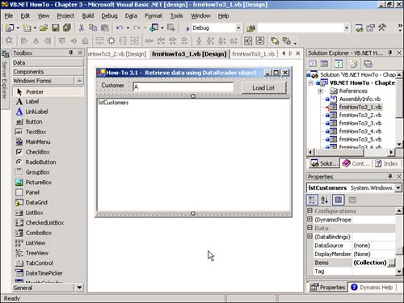

3.1 Retrieve Data by Using the DataReader Object
In Chapter 1, you learned how to use bound controls to OleDb controls that could be included on the forms. Some developers prefer to use unbound controls to perform the same task. The DataReader object allows you to add items to a list box in a more efficient manner because it is only a read-and-forward-only type object. This How-To tells you how to generate a limited ListBox control by using a DataReader object.
You want to create a limited list of customers. You don't want to use bound controls because you are a cool VB developer who knows better than that. You heard that the DataReader object is a fast way to get data. How do you retrieve data using the DataReader object to perform this task?
Technique
For this How-To, you will be using the ListBox control and loading items into it by using the DataReader object. To get to the DataReader object, you need to look at the Command object.
The Command object in .NET works similarly to the ADO Command in that you will assign the stored procedure name or SQL statement to the CommandText property as well as the connection to use. One difference is that you will use the Open method of the Command object, and then the ExecuteReader method, to create the DataReader object.
You will then use the Read method off of the DataReader object to perform two tasks. The first task is that when used in a loop, you can test for datareader.Read() to check whether to terminate the loop and also to iterate through the rows that the DataReader object returns.
After you have the DataReader populated and you are iterating through the rows, you will load the data into the ListBox control. You will be using the Clear and Add methods, which were used in VB 6. In addition, you will use the BeginEdit and EndEdit methods, which speed up loading ListBox controls when you are loading a large amount of data.
To view this example in design view, open the form called frmHowTo3_1.vb in the chapter's solution.
Steps
Open and run the VB.NET-Chapter 3 solution. From the main form, click on the command button with the caption How-To 3.1. When the form loads, click on the Load List command button. You will see the list below fill with all the company names that start with A.
You will be creating a form similar to one that was created in Chapter 1. Instead of using bound controls, however, you will use code along with ADO.NET to populate the ListBox control.
Create a Windows Form. Then place a Label, TextBox, ListBox, and Command button on the form with the properties that are listed in Table 3.3 set.
Table 3.3. Label, TextBox, ListBox, and Command Button Control Property Settings
|
Label
|
Name
|
Label1
|
| |
Caption
|
Customer
|
|
TextBox
|
Name
|
txtCustLimit
|
| |
Text
|
A
|
|
ListBox
|
Name
|
lstCustomers
|
|
Command Button
|
Name
|
btnLoadList
|
| |
Caption
|
Load List
|
Notice that the list box does not have the DataBindings properties set. That is because you will be using the ListBox control unbound. Look at Figure 3.3 to see what the form should look like.

Before creating the code that will be attached to the Click event of the btnLoadList command button, you need to devise a support routine to create the connection string. Called BuildCnnStr, the function can been seen in Listing 3.1. This function takes a server and database names that are passed to it and creates a connection string.
Listing 3.1 modGeneralRoutines.vb: Creating a Connection String
Function BuildCnnStr(ByVal strServer As String, _
ByVal strDatabase As String) As String
Dim strTemp As String
strTemp = "Provider=SQLOleDB; Data Source=" & strServer & ";"
strTemp &= "Initial Catalog=" & strDatabase & ";"
strTemp &= "Integrated Security=SSPI"
Return strTemp
End Function
Although you could create a routine that would pass back a Connection object, a more versatile method is to pass back a string. The reason for this is that for some objects, you are asked for a Connection object, whereas in other objects, you just need a string. You will see BuildCnnStr called in the next step.
On the btnLoadList Command button, add the following code from Listing 3.2 to the Click event. In this routine, a SQL string is created and stored in the strSQL string, taking Text property of the txtCustLimit text box and adding it to a literal. Then, within a Try-Catch-End-Try block, a new instance of an OleDbCommand object called ocmdCust is created. The routine then follows the steps that are discussed in the Technique section.
Listing 3.2 frmHowTo3_1.vb: Loading a List Box By Using the DataReader Object
Private Sub btnLoadList_Click(ByVal sender As System.Object, _
ByVal e As System.EventArgs) Handles btnLoadList.Click
Dim ocmdCust As OleDb.OleDbCommand
Dim odrCust As OleDb.OleDbDataReader
Dim strSQL As String
'-- Create the SQL String
strSQL = "Select CompanyName From Customers Where CustomerID Like '" &
Me.txtCustLimit.Text & "%'"
'-- Set up the exception catch
Try
'-- Create an instance of the command
ocmdCust = New OleDb.OleDbCommand()
With ocmdCust
'-- Set up the connection of the command and the command text
.Connection = _
New OleDb.OleDbConnection(BuildCnnStr("(local)", "Northwind"))
.Connection.Open()
.CommandText = strSQL
'-- Set up the data reader instance
odrCust = .ExecuteReader(CommandBehavior.SequentialAccess)
End With
'-- Add the items to the list box.
With lstCustomers
.Items.Clear()
.BeginUpdate()
Do While odrCust.Read
.Items.Add(odrCust.Item("CompanyName"))
Loop
.EndUpdate()
End With
Catch oexpData As OleDb.OleDbException
MsgBox(oexpData.Message)
End Try
End Sub
Note
 |
Something of interest to those VB developers is the fact that the lines of code that read as follows:
.Connection = _
New OleDb.OleDbConnection(BuildCnnStr("(local)", "Northwind"))
actually declare, initialize, and use an OleDBConnection object in the single statement. This is new to .NET and is extremely useful.
|
How It Works
When the user clicks the btnLoadList button, the Command object is assigned the necessary properties, the connection is opened, and the ExecuteReader method is called.
After the list has been cleared, the DataReader is iterated through, and the ListBox control is loaded.
Comments
The DataReader object is one of the most efficient ways to get data from the server and load lists into your application. Other options besides CommandBehavior.SequentialAccess are available that make the DataReader convenient to use. Most notable is CommandBehavior.SchemaOnly, which returns information only about the columns, and no data.
You can use the Command object in a number of ways besides what was mentioned in this How-To. You will see additional examples of using the Command object with stored procedures to perform batch actions later in the chapter.
You have seen how to use the ListBox control in a total unbound technique. In the next How-To, you will see a blend of using the ListBox control in a semibound technique, where you will bind the data at runtime.